In September the Game Arts International Assembly will host an online edition on Tuesday 10th and Thursday 19th September. This time GAIA
will host 8 tracks distributed in 2 days with over 20 curators, community organizers and cultura producers from 12 countries from around
the world. We will cover a wide range of topics such as online curation and community caring to innovative editorial approaches. In
addition to talks sharing personal experiences, playful workshops, and practical sessions, GAIA will include an online artgames showcase.
The sessions will be hosted in a private zoom session, those interested in attending have to sign up filling this form.
GAIA 2024 Participants
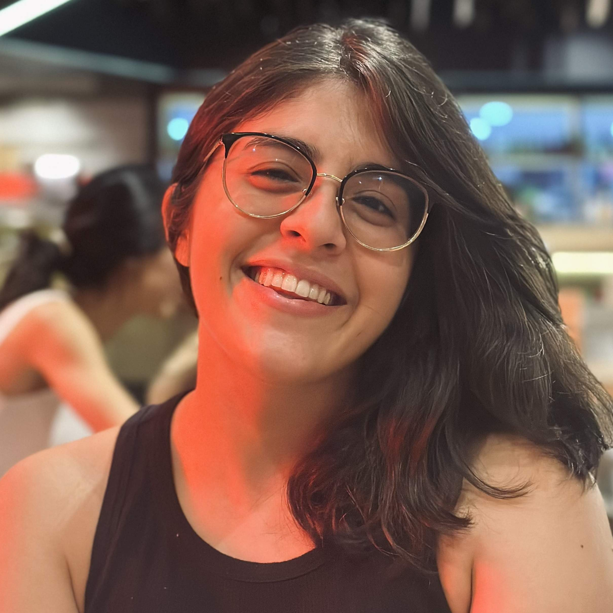
Sol Sanchez
🇵🇪 Perú
Sol Sanchez CCO at Somber Pixel and President of FemDevs Peru. Sol started working on games as a Programmer and is now co-leader of an indie studio in Peru. In addition to video game development, Sol is very passionate about supporting the Peruvian industry. Her work in the industry has led her to receive recognitions such as “GIBiz Game Changer” and “The Game Awards Future Class.
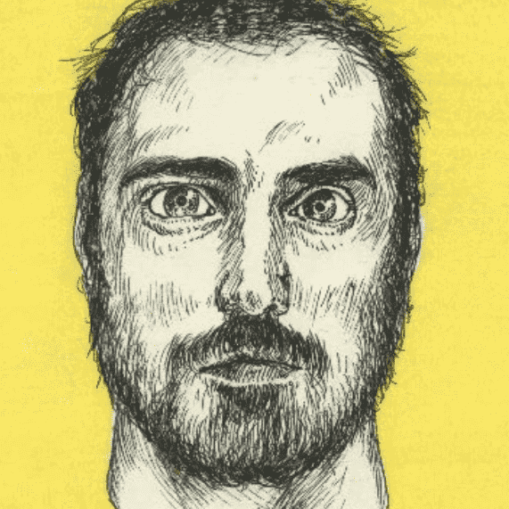
Angelo Careri
🇫🇷 France
game art project(s): Immersion magazine, La rencontre conference program (Sorbonne-Nouvelle University)
Angelo Careri is the chief editor of Immersion magazine and a researcher in the digital lab of École des Beaux Arts
de Lyon (Unité de Recherche Numérique). His artistic practice mainly involves writing and performing, with a focus on political
themes and utopias. He currently teaches video game theory at Ecole de Communication Visuelle and ITECOM Art & Design (Paris).
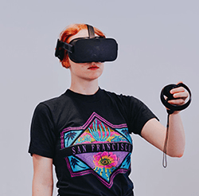
Cat Bluemke
🇨🇦 Canadá
Cat uses game design, performance, and expanded reality to explore the dynamic
relationship of work and play. Graduating in 2018 with her MFA in Design for Emerging Technologies from the School of the Art
Institute of Chicago, she is interested in discussing technology's impact on social and working relations, with a focus on
precarious, feminized, and domestic labour. Her work has been exhibited internationally at venues such as the 2018 Venice
Architecture Biennale, Kunsternes Hus (Norway), and the Museum of Contemporary Art (Chicago). She currently lives and works in
Treaty 4 territory..
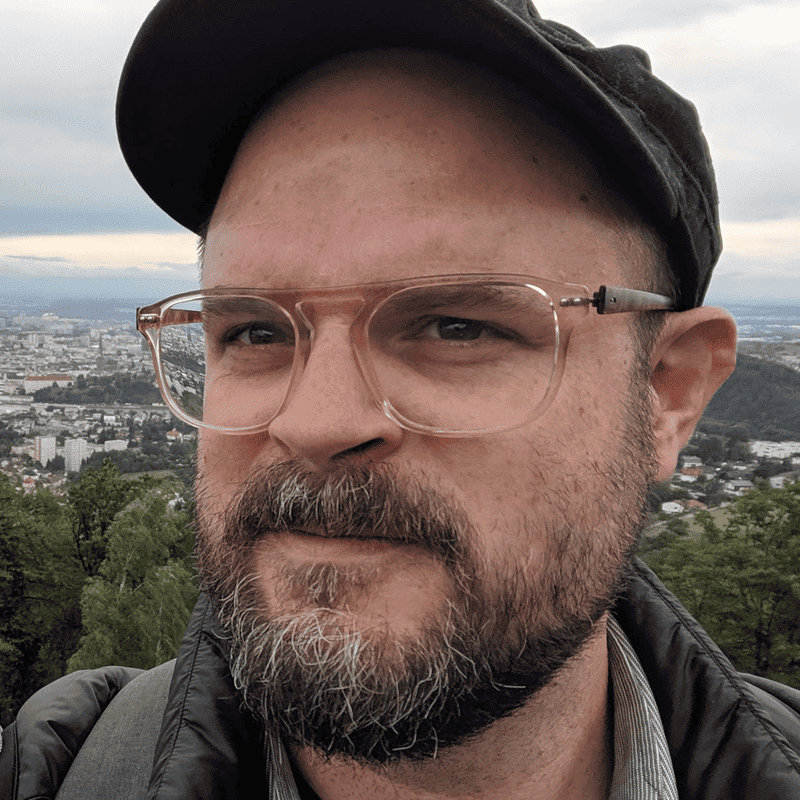
Chaz Evans
🇺🇸 United States
Chaz is Assistant Professor of Media Art at the University of South Carolina as well as
Co-Founder of VGA Gallery. Evans is an artist, educator, writer, and curator. His work deals with the connections between video
game art, 3D animation, software production, and the art historical past as well as the tensions between global technological
powers and local media cultures
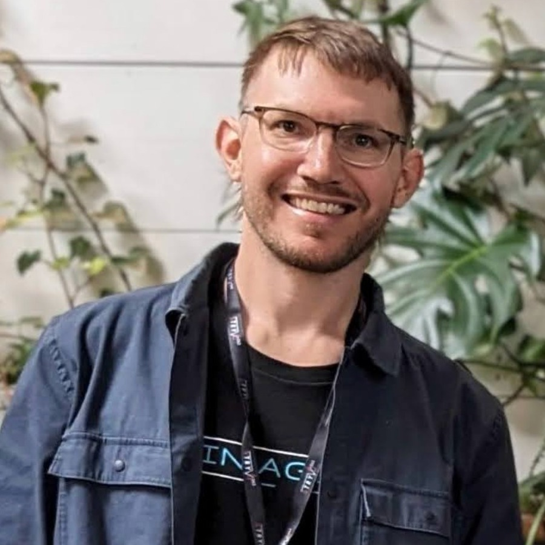
David Antognoli
🇺🇸 United States
David Antognili (he/him) is the Director at Night City, a Chicago studio
focused on community-based game development, exhibitions, and educational resources. In addition, he is an Assistant Professor
of Game Design in Columbia College Chicago where his creative and scholarly agenda emphasizes game experiences in community
contexts. A game industry veteran with experience in both programming and design roles, David has worked on projects with
companies like Microsoft, Sega, 2K Games, and Nickelodeon. Now he finds creative refuge in independent game development and
helping others build, share, and experience amazing games.
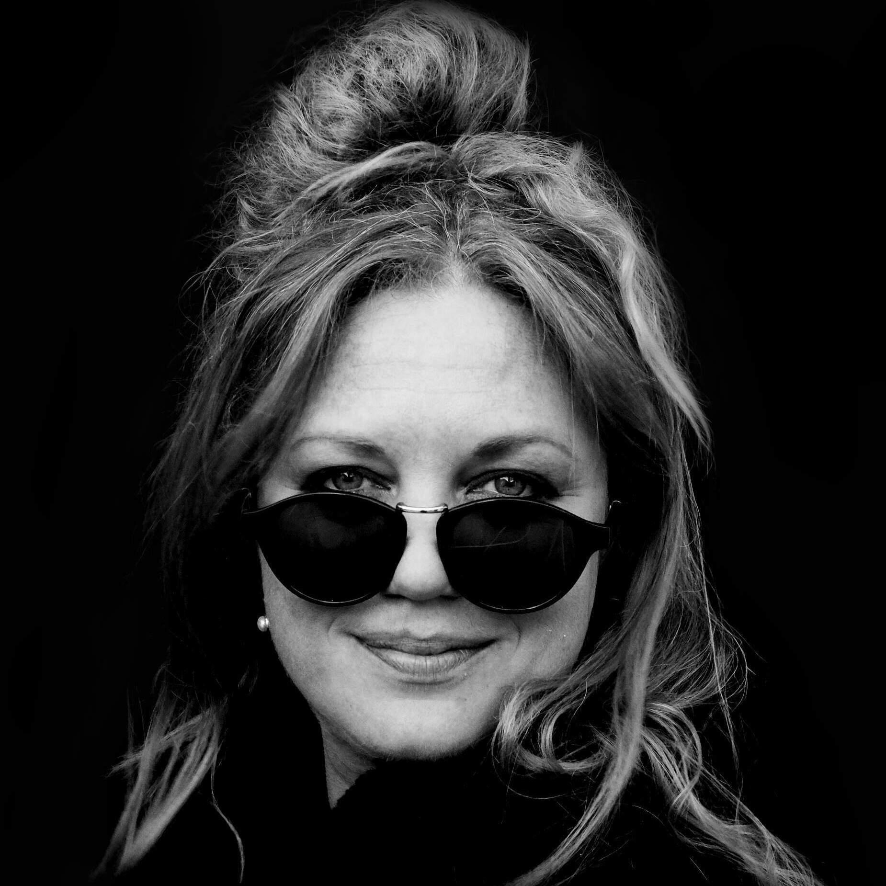
Dominique Gawlowski
🇿🇦 South Africa
game art project(s): Playtopia
Dominique is the managing director at Free Lives by day, festival director for Playtopia by night. She has been
in events for more than 15 years before moving to the games industry so when Free Lives wanted to start Playtopia, it was a
major bonus they knew someone who could do it. Dominique and 3 friends whom she has done events together with in the past also
work in games now (some at Free Lives) and so they have all come together to work on Playtopia as their passion for games and
events are now combined! and the team as grown by A LOT!.
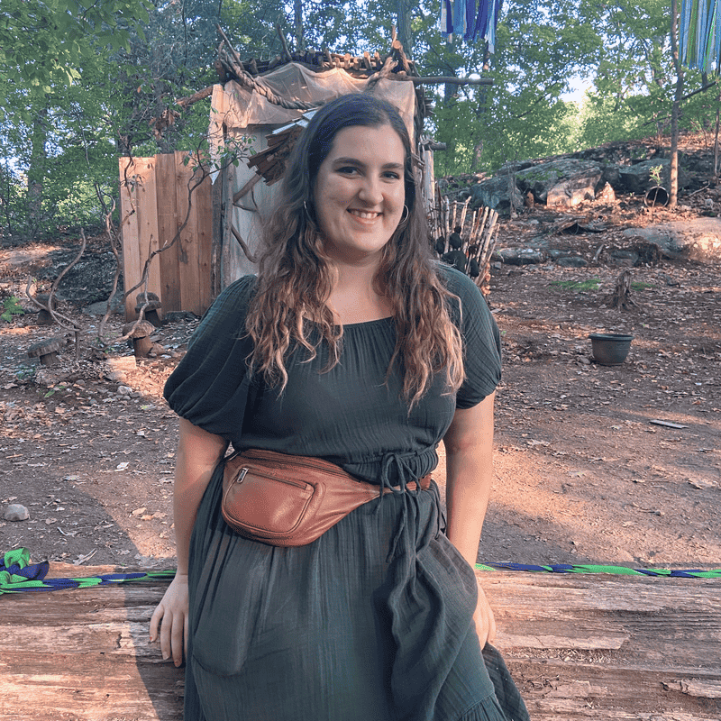
Emily Koonce
🇺🇸 United States
Emily Emily Koonce (she/her) is a multi-media artist, writer, and community
organizer interested in the intersection of folk games, philosophy, and education. She has worked as an adjunct professor at the
NYU Game Center, as the program director of the National Student Leadership Conference's game design high school program, and as
a Meow at Babycastles in NYC. She is currently based in Chicago where she can be found turning movies into drinking games and
giving riddles to strangers at parties. Her videogame crockpot about being bored in the suburbs released earlier this year.
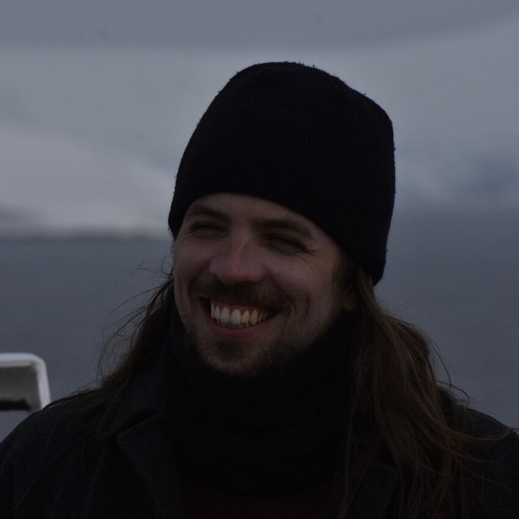
Gonzalo Borzino
🇦🇷 Argentina
game art project(s): Accion Dev
Gonzalo isa professional Game Designer,
a game jam enthusiast, a university teacher of video game production and part of the Red de Comunidades de Desarrollo de
Videojuegos. Gonzalo co-founded AcciónDev, a community that promotes development around themes of social, ecological, reflexive
and identity interest, from Latin American vision. Acciondev has participated in the creation of various gamejams, learning
spaces and gaming articles.
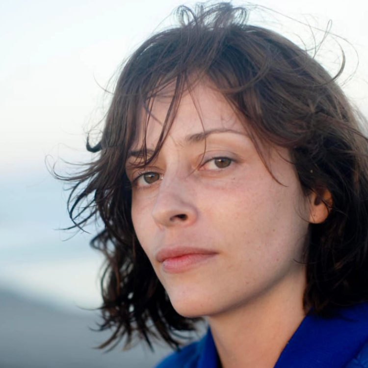
Merlina Rañi
🇪🇸 Spain
Merlina Rañi (Brazil, 1987) is an art curator specializing in digital media and scientific dissemination. Her research delves into virtual environments and their connection with physicality, aimed at developing a critical perspective on language transformations: new information circuits, misinformation formats, and the rhetoric of digital media. Through her writing practice, she explores formats between journalism and fiction in search of experience-oriented and multi-perspective narratives. Her latest works focus on the implications of technological abstraction on society's political and affective dimensions.
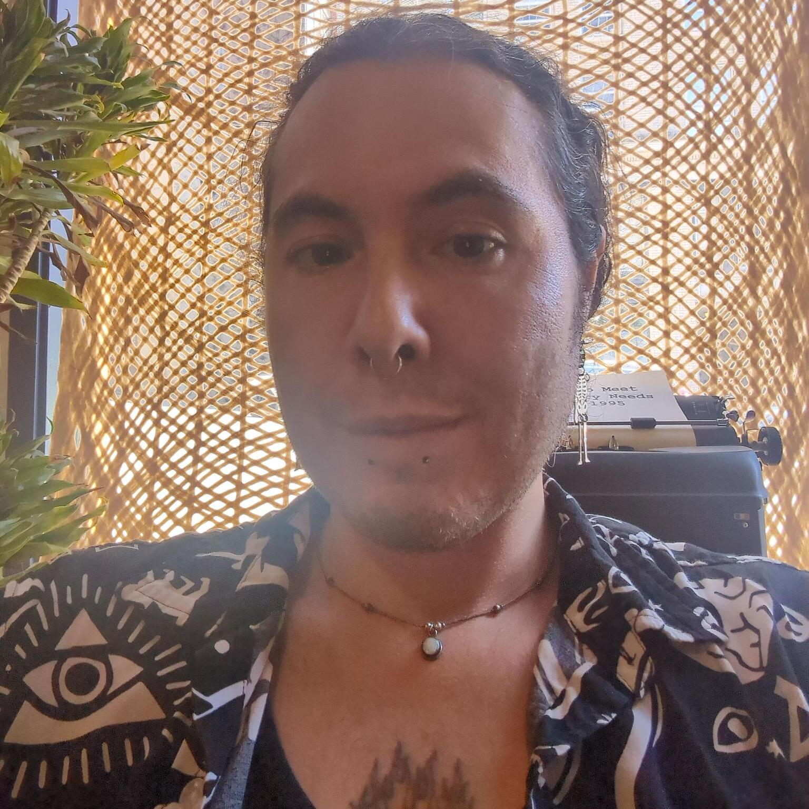
Hexe Fey
🇺🇸 United States
Hexe Fey is an interdisciplinary games maker, curator, dancer, nerd, transsexual.
Oglala Lakota and European.
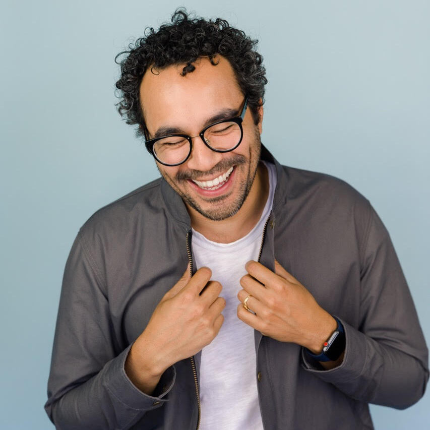
Jamin Warren
🇺🇸 United States
Jamin founded Gameplayarts, an organization dedicated to the research and practice of
game-based arts and culture. He has produced events such as the Versions conference for VR arts and creativity, in partnership
with NEW INC. Warren also programmed the first Tribeca Games Festival, the groundbreaking Arcade at the Museum of Modern Art,
and the Kill Screen Festival, which Mashable called "the TED of videogames." Additionally, he has served as an advisor
for the Museum of Modern Art's design department, acted as cluster chair for the Gaming category for the Webbys, and hosted
Game/Show for PBS Digital Studios.
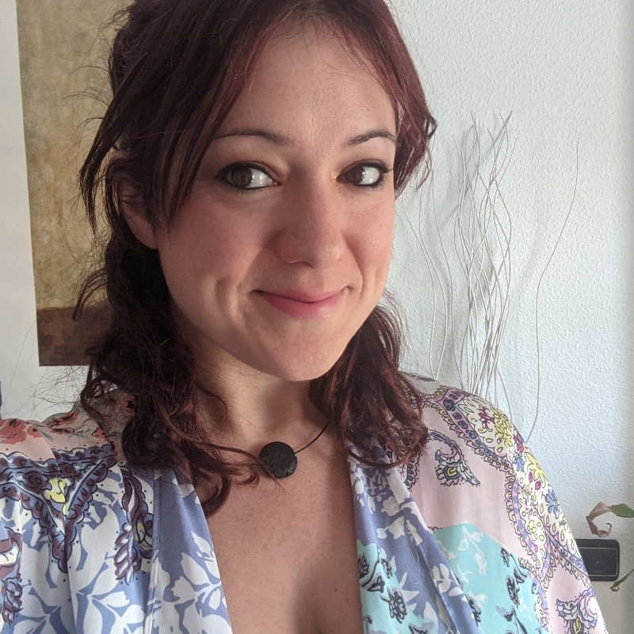
Ines Alcolea Llopis
🇪🇸 Spain
Ines has been working in the field of cultural project communication and technology for over 10 years. She is also a writer of short stories, poetry, essays, and video games. Throughout her creative career, she has been awarded numerous prizes in both poetry and short story categories. Notably, she received the provincial Géminis award at just 14 years old and this year she was awarded the second runner-up in the national short story competition "Mujeres de Santa Cruz de Tenerife." Currently, she works as a communications manager at Gameloft and occasionally organizes writing projects and workshops with various entities.
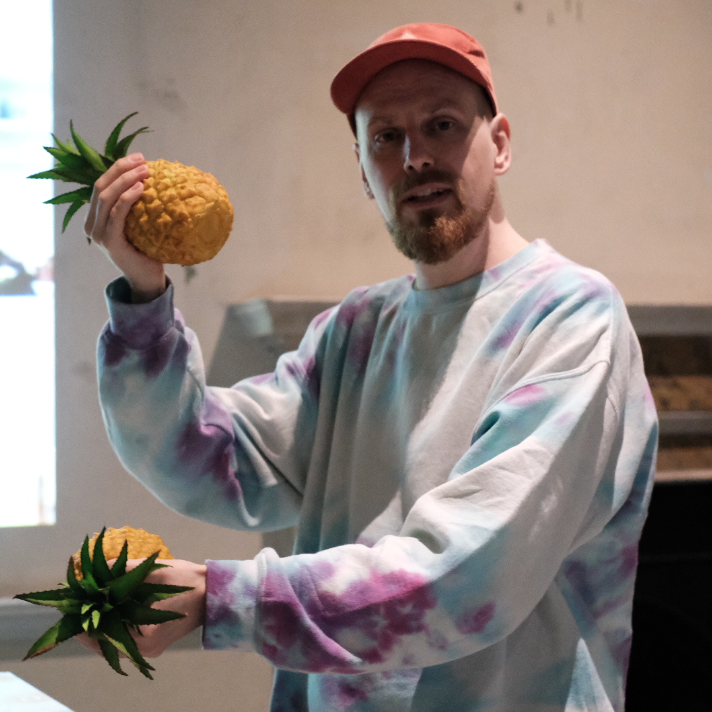
Kjell Håftén
🇸🇪 Sweeden
Kjell I am a producer of independent games culture working with the local
games scene in Gothenburg, Sweden. My work consists of building creative infrastructure around indie games through events,
collaborations and building platforms for creation and exhibition of games and playful art. I also work as a freelance games
educator, teaching kids how to make experimental games and spreading games literacy through talks and workshops.
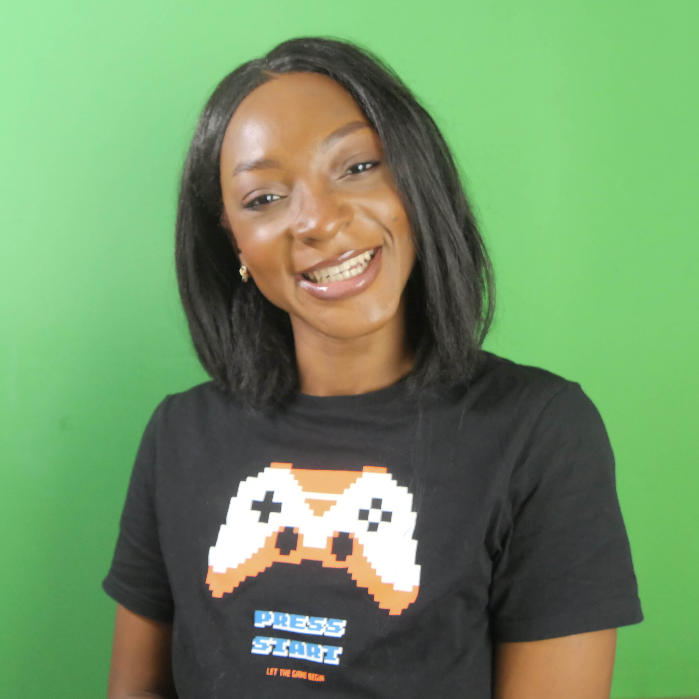
Ophélie Apie Oddy
🇫🇷 France
Apie Paris native, blending her vibrant Parisian upbringing with Abidjan roots, is a powerhouse in video games and comics. Armed with a Graduate degree in Economics and Management and a passion for human resources, she has created a cross-cultural educational blend.
She worked as a Content Manager and Community Builder at GARA, a mobile games and comics distributor, Ophélie where she only brought entertainment but also ensured accessibility through mobile wallets. Beyond GARA, she collaborates with the Goethe-Institut, organizing events like the Goethe Gboro Night, displaying her commitment to educating African youth about gaming industry opportunities. Additionally, she serves as the African representative of the French association Afrogameuses, contributing to the advocacy for women in the gaming industry, and manages the African Gaming Talents project.
A self-proclaimed multipotentialist with love for music, gaming, and an insatiable curiosity, Ophélie identifies as an African Gaming Promoter. Passionate about women's representation, she dreams of establishing the first women's-only gaming studio in Africa. Ophélie's journey is a personal dedication to diversity, creativity, and empowerment in the gaming world..
Michael My name is Michael Berto. I'm a writer, composer and game developer from
Australia. in 2017, I founded The Zium Society and we released our first 'Art Gallery Video Game' called The Zium Museum. Since
then, we've released three seperate, unique collections and galleries for free, via the internet. I am currently working as a
writer and composer in the video game industry.
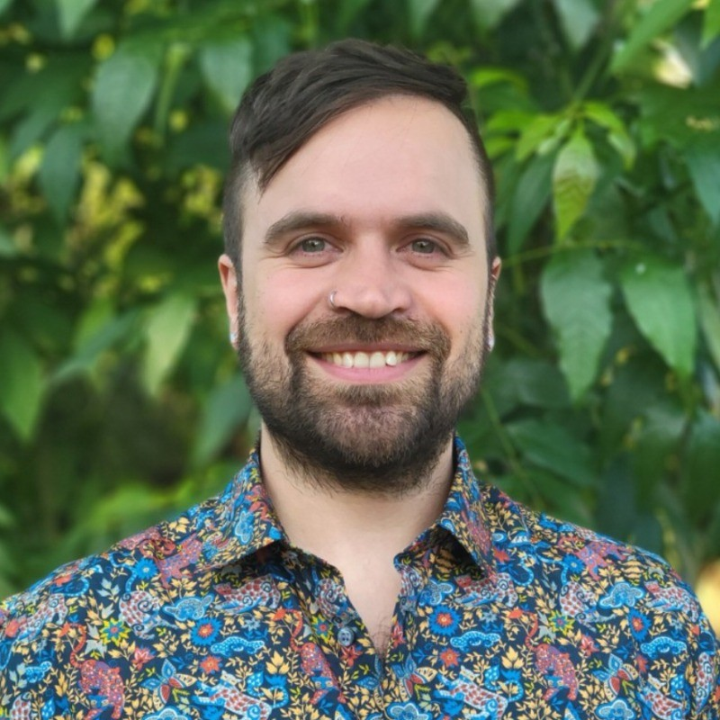
Nicolas Valdivia Henning
🇨🇱 Chile
Nico Valdivia Hennig is a Chilean game
designer, psychologist, and cultural studies researcher with a decade of experience in game design. Currently, as a PhD student
in Hispanic Studies at the University of California, Riverside, their focus is on ludic activism, game design, and production in
the Global South, particularly in Latin America. Nico co-founded Niebla Games, launching games for PC and mobile platforms, and
will soon be an artist-in-residence of the Speculative Play and Just Futurities program at Indiana University. At the University
of California, Riverside, they have been organizing events around "Impactful Games & Ludic Activism," showcasing games like
"Liyla & the Shadows of War" with Rasheed Abueideh, and "Atuel" with Pablo Quarta from Matajuegos. Our upcoming event will focus
on ludic activism from Ukraine. Additionally, Nico was recently nominated with their team for the AMaze/Berlin Festival of
Experimental Game Art 2024.
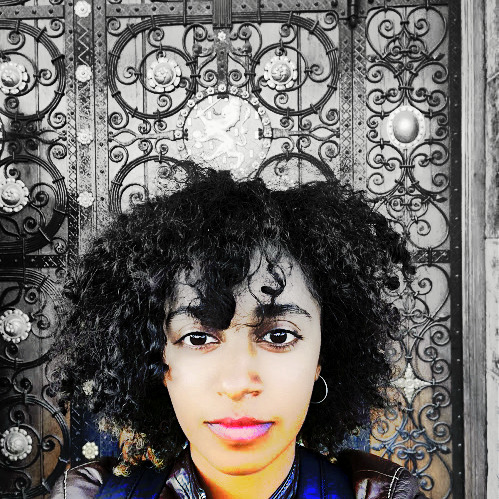
Bethlehem Anteneh
🇪🇹 Etiopia
Bethlehem Anteneh is an Ethiopian game-thinking expert and ecosystem builder with a background in architectural design, known for her innovative use of games to design environments and frameworks that enhance human experience and problem-solving. As the founder and co-founder of several initiatives, including PlayLab, Digital Learning Hub, and Games For Change Africa, she has been instrumental in advancing the games industry across Africa and Europe. Her work spans over 25 countries, where she has managed projects, curated communities, and led workshops and hackathons. Notably, she was the Game-Thinking Lead for the 'EnterAfrica-Gamify Your City Future!' project with the Goethe-Institut and currently curates Addis Abeba's annual gaming festival, ChewataCon. Bethlehem is also a thought leader in learning experience design, a founding member of the Ethiopian Games Association, and actively involved in global gaming and impact networks.
Peter Devish
🇧🇪 Belgium
Peter Peter Devisch is working as a music programmer and festival coordinator at the
cultural centre of Bruges. It’s an organization who programs stage arts and plastic arts in several theatres in the city. Every
two years they are changing their main old city theatre in a huge arcade hall during the Playtime festival. They present games
for a young public who have a link with arts and/or society. The purpose is to introduce playful arts as a full-fledged art
genre at the public. In the future they will look for further international collaborations. The next festival Playtime 20.25
will take place from 7-10 March.
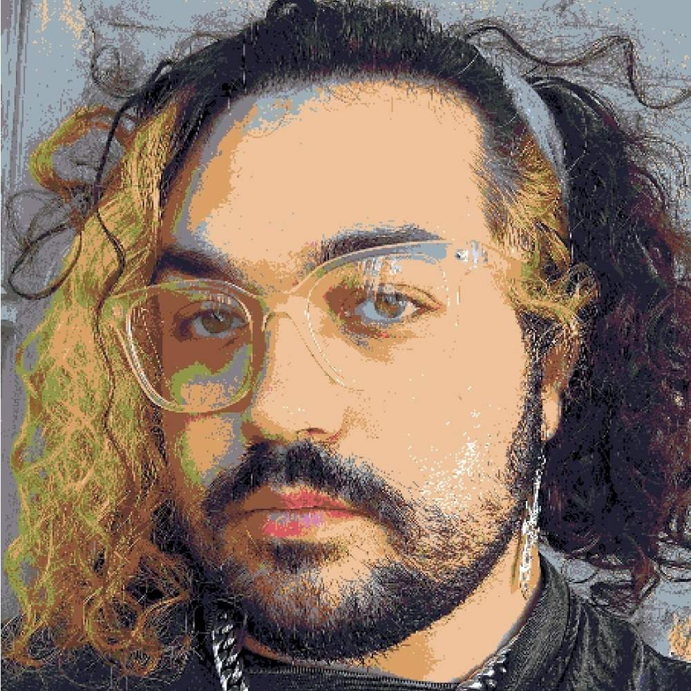
Seb Galvez
🇺🇸 United States
Seb is an independent, multi-media artist with a focus on interactive art and narrative. Their current work
focuses on experimenting with short-form games, as well as community organizing as part of Chicago nonprofit Indie City Games.
Tobias Kopka
🇩🇪 Germany
Tobias is an experienced program director and connector in the games industry. Since
2009, he's directed events like Ludicious Zürich Game Festival, Next Level, devcom, Gamescom Congress, and Reboot Develop.
Beyond event curation, Tobias co-creates VR&Dance pieces with the VR Dance Club and offers support as a Systemic Coach. He
co-founded the European Game Showcase and the #ArtOfCoding campaign, pivotal in having the Demoscene recognized by UNESCO as the
first digital culture to be considered intangible heritage..
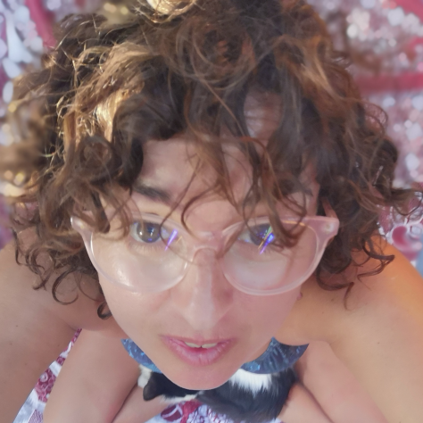
Isabelle Arvers
🇫🇷 France
Isabelle PHD, is a French artist and curator whose research focuses on the
interaction between art and video games. For the past twenty years, she has been investigating the artistic, ethical, and
critical implications of digital gaming. Her work explores the creative potential of hacking video games through machinima. As a
curator, she focuses on video games as a new language for artists. She curated several shows and festivals around the world,
including Jibambe na Tec (Nairobi, AF, 2020), Tecnofeminismo (Bogota, AF, 2019), Art Games World Tour exhibit (Buenos Aires,
2019), Interspecies Imaginaries (Overkill, 2019), Machinima in Mash Up (Vancouver Art Gallery, 2016), UCLA Gamelab Festival
(Hammer Museum, Los Angeles 2015, 2017), Evolution of Gaming (Vancouver, 2014), Game Heroes (Alcazar, Marseille, 2011), Playing
Real (Gamerz, 2007), Mind Control (Banana RAM Ancona, Italy, 2004), Node Runner (Paris, 2004) Playtime (Villette Numérique,
2002). In 2019, she embarked on an Art and Games World Tour in non western countries to promote the notion of diversity of
gender, sexuality and geographic origin, focusing on queer, feminist, and decolonial practices. In 2024, Arvers completed her
PHD on Art & Games decolonization.
17:00 - 17:45 (45m) David Antognoli
Microtalks introducing a variety of artgames events and projects from around the world: Different Perspectives (Belgium) Playtopia
(Capetown), OneTwoSix (Los Angeles) xxxx(Sweeden), Accion Devs (Argentina) & Indie Dev Day (Spain)
Supporting local game scenes as community organizers
18:00 - 18:45 (45m) David Antognoli + Emily Koonce + Seb Galvez
As organizers, we seek to cultivate and support our local game scenes. This conversation will give participants an opportunity to
enumerate the needs of their local game scenes, the challenges they face, and the resources they thrive on. What strategies might help
us connect these resources to our game scenes? We seek to provide a venue for potential and current organizers to share their
experience and actionable steps that have worked for them.
20:00 - 20:45 (45m) Nicolas Valdivia Henning + Isabelle Arvers
Microtalks presenting artgames, experimental projects and innovative wild ideas that merge art, play and technology- PEDING INFO